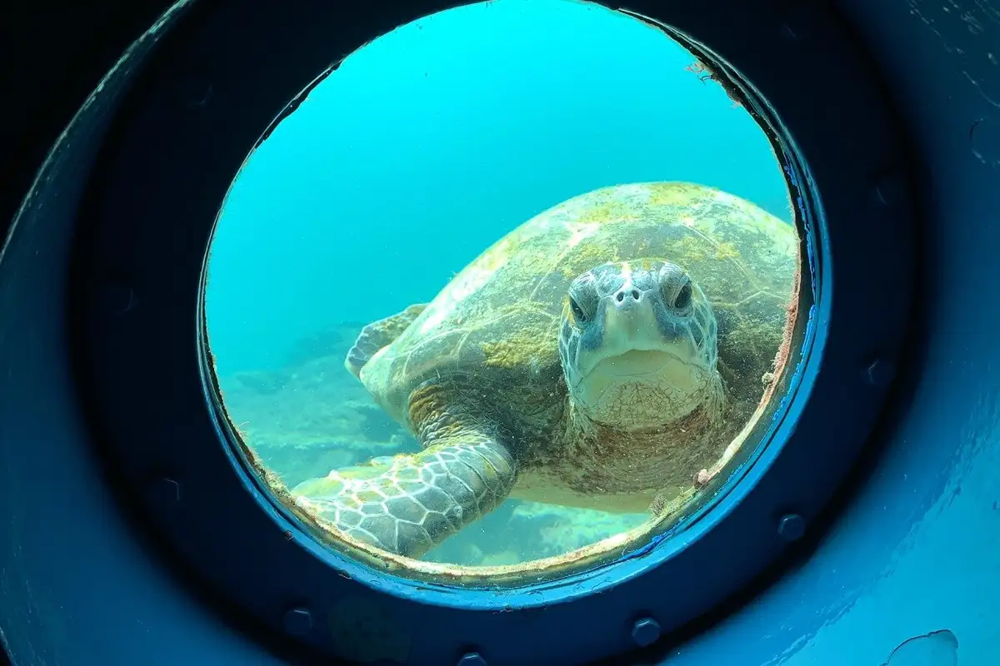
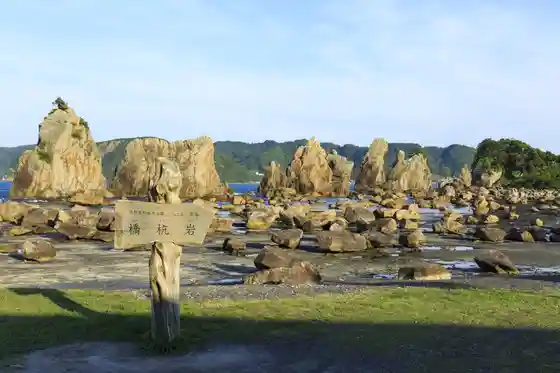
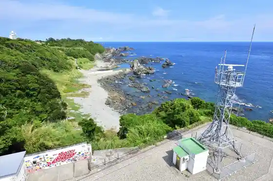
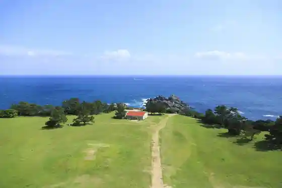

Japan / Wakayama / Kushimoto
Kushimoto
Kushimoto · Wakayama
Kushimoto
Highlighted on the Wakayama map.

Sights
Hashigui Iwa
Kushimoto, Wakayama · 0735-62-3171 · Official / source link

Kushimoto Kaichu Park
Kushimoto, Wakayama · 0735-62-1122 · Official / source link
Shionomisaki Lighthouse
Kushimoto, Wakayama · 0735-62-0141 · Official / source link

Boro no Shiba to Shionomisaki Kanko Tawa
Kushimoto, Wakayama · 0735-62-0810 · Official / source link

Uchu Fureai Horu Sora Miru
Kushimoto, Wakayama · Official / source link
Toruko Memorial Museum
Kushimoto, Wakayama · 0735-65-0628 · Official / source link
Kashino Saki Lighthouse
Kushimoto, Wakayama · 0735-62-3171 · Official / source link
Nanki Kumano Jio Park Center
Kushimoto, Wakayama · 0735-67-7100 · Official / source link
Kyuryu Shima
Kushimoto, Wakayama · Official / source link
Kushimoto Okyo Ashi Yuki Kan
Kushimoto, Wakayama · 0735-62-6670 · Official / source link
Umi Kongo
Kushimoto, Wakayama · 0735-62-3171 · Official / source link
Kashino Saki no Kujira Yamami
Kushimoto, Wakayama · Official / source link
So Shima
Kushimoto, Wakayama · 0735-62-3171 · Official / source link